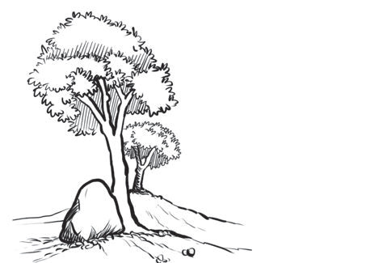
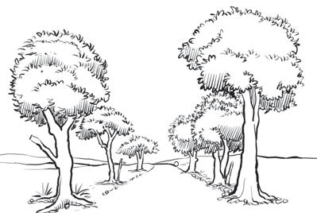

Kielelezo namba 21: Mfano wa picha isiyo na mizania
Aidha, Kielelezo namba 22 kinaonesha picha yenye mizania inayolingana, ambapo mchoraji ameweka vitu, yaani miti, majani na milima pande zote mbili, na hivyo kuifanya picha iwe na uzito unaolingana kwa pande zote mbili, kushoto na kulia.

Kielelezo namba 22: Mfano wa picha yenye mizania